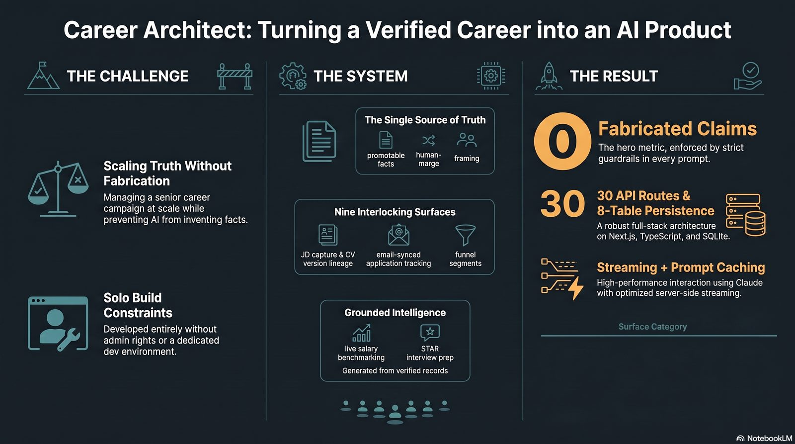
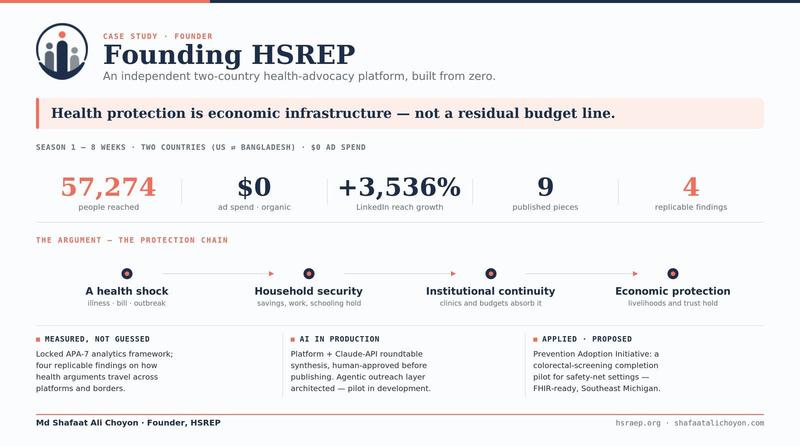
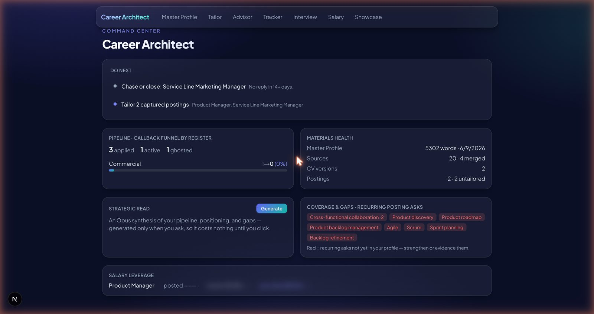
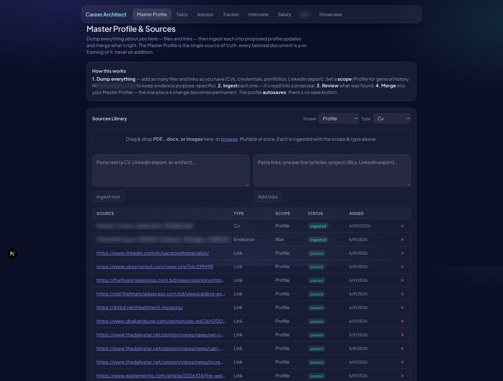
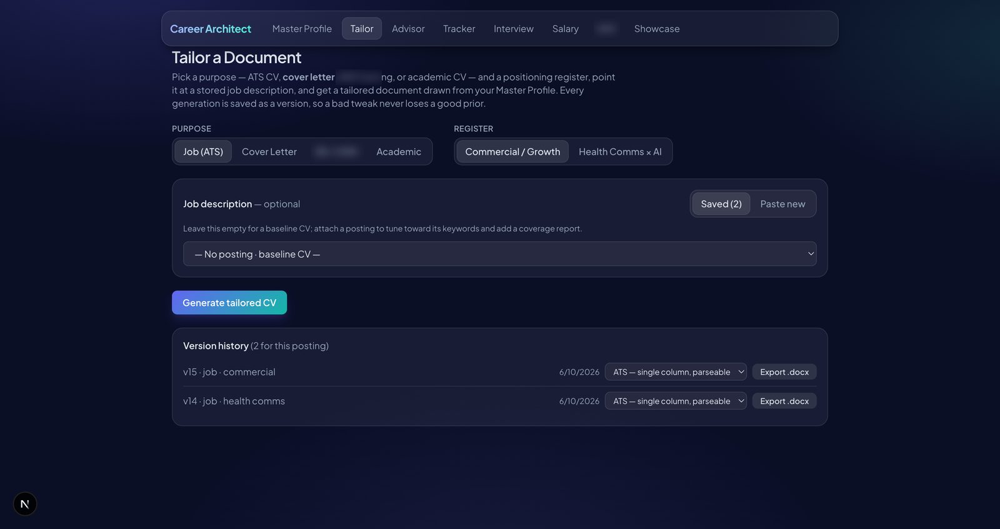
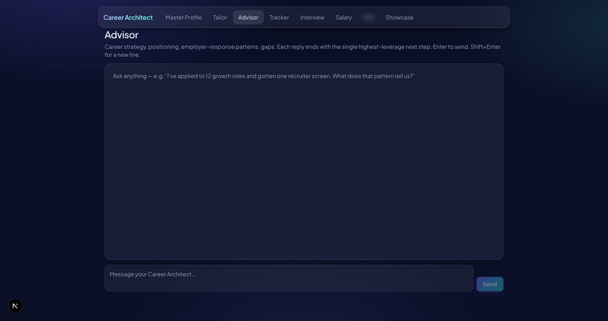

Shafaat Choyon
Shafaat ChoyonHealth communication, engineered with AI.
An operator-strategist who orchestrates multiple AI models under human editorial control, designs AI-augmented systems, and applies them across communication, analysis, and product work.
I don't just use AI tools, I direct them. I run multiple frontier models in parallel for their individual strengths, stay the accountable editor over everything they produce, and build reusable systems rather than one-off outputs. Across public-health communication and commercial growth, I treat AI as leverage on top of evidence and strategy, not a replacement for them.
What sets it apart
The instinct that separates a strong practitioner from a casual user: knowing how to direct the models, where the human stays accountable, and how to hold AI-assisted work to a real evidence standard.
Orchestration, not single-tool use
I work across NotebookLM, Claude (Opus), ChatGPT, and others at once, routing each task to the model that handles it best, then reconciling everything under a single editorial standard.
Human editorial control
Everything AI-generated passes through my review before it ships. I keep the line explicit: where the human stays accountable is never left implicit.
System design, not just prompting
I architect the systems AI runs inside: source-of-truth data models, generation paths, and decision rules. That is product and data thinking applied to AI, rarer than good prompting.
Evidence-driven
I instrument the work with metrics, diagnostics, and findings, and act on the numbers rather than on vibes.
Breadth across knowledge work
Drafting and health communication, data analysis, design briefs, product scoping, and agentic tasks that use AI agents to execute live workflows.
Where the work shows up
Public campaigns, graduate research held to academic rigor, systems I designed and built, and applied data work, each with a clear line on what it demonstrates.
HSR Season 1, a bi-national public-health advocacy campaign
A bi-national campaign (Feb to Apr 2026) produced with NotebookLM, Opus, ChatGPT, and Claude, all under human editorial control. It shipped seven published articles across The Daily Star and Eastern Echo / WellNest Watch, reached 57,274 impressions at zero ad spend, and produced four named findings, including ministerial-tag amplification at roughly 3x reach and a suggested-traffic dose-response effect.

Career Architect, an AI system I designed and built
A multi-model application-strategy engine, built as a Next.js app plus a structured Claude Project running Opus. Deliberate architecture: a Master Profile as the single source of truth, user-asserted facts always accepted, a job-description-optional generation path, and two co-equal positioning registers.

MPH capstone
Built on the Season 1 campaign: a 43-page APA manuscript, a 48x36 inch research poster, a defense presentation, and a 12-tab master dataset, with AI used to accelerate analysis while every claim was held to academic standards.

HSREP, from campaign to institution
Turned a body of campaign work into a standalone institutional platform (live at hsraep.org) with a full brand system and a website build brief, applying AI across brand, content, and product to stand up something durable.
Financial statement analysis
Five periods of bank statements consolidated into an Excel workbook and an HTML infographic, mapping SWIFT transfers, fee stacks, and account-flow patterns into a clear synthesis.
AI agents running live workflows
Using AI agents to carry out live, multi-step workflows directly: navigating and completing real forms, extracting and repurposing source documents, and iterating on outputs in place, not just chatting.
Career Architect, the product itself
A nine-surface system built solo around one source of truth, with a never-fabricate guardrail in every prompt and a human review before anything is used.




Product surfaces shown to illustrate the system design. Identifying data is masked.
How I work with AI
Iterative and reviewed
I request focused, right-sized outputs and check each before moving on, rather than accepting first drafts.
Register-aware
I calibrate tone and framing to audience and purpose, maintaining distinct professional registers.
Decisive scoping
I cut scope deliberately, defining a lean build and deferring non-essential features, rather than over-building.
Continuity
I run sustained, multi-session programs with persistent context, treating AI as a long-running collaborator, not a disposable tool.
Honest scope: not a machine-learning engineer. An AI workflow and application builder with human-in-the-loop QA, applied to health communication, data analysis, and product scoping.